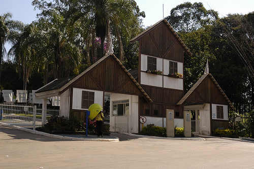

PARQUE DO TRABALHADOR - CORRUPIRA
O Parque do Trabalhador, também conhecido como Parque do Corrupira, localizado no bairro de mesmo nome, oferece lazer a toda a família.
Possui dezenas de quiosques, cada qual com sua churrasqueira, uma área para eventos onde se realizam espetáculos populares, trenzinho, sistema de som, áreas para piqueniques, além de amplo estacionamento para carros.
O parque foi inaugurado em 7 de outubro de 1979 e reformado em 2000.
Ocupa área de 225 mil m², sendo 140 mil m² de mata nativa, considerado atualmente reserva biológica.
As crianças até 12 anos podem se divertir nos parquinhos.
O trenzinho funciona de quinta, sexta e sábados, das 15h às 16h. E aos domingos, 13h30 às 16h.
Proibido entrar com animais, bicicletas, patins ou patinetes ou soltar pipa.
- Endereço: Av. Nicola Accieri, 1900 – Bairro Corrupira
- Telefone: (11) 4582-0721
- Horário de Funcionamento: Temporariamente Fechado por conta da pandemia da Covid-19
PARQUE DO TRABALHADOR - CORRUPIRA
O Parque do Trabalhador - Corrupira está localizado no Endereço: Av. Nicola Accieri, 1900 – Bairro Corrupira.